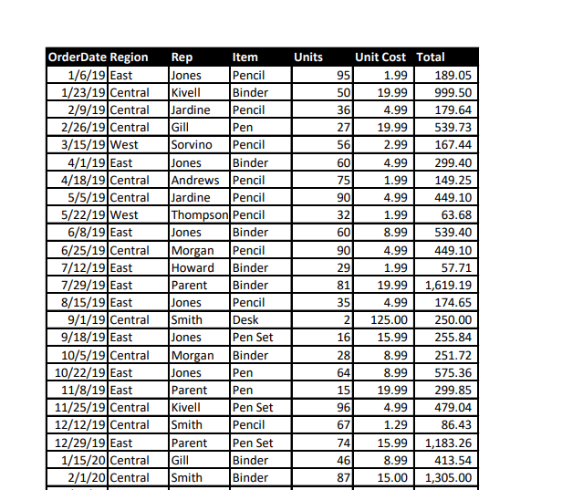
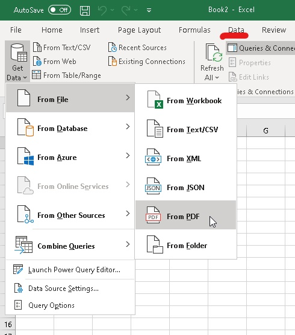
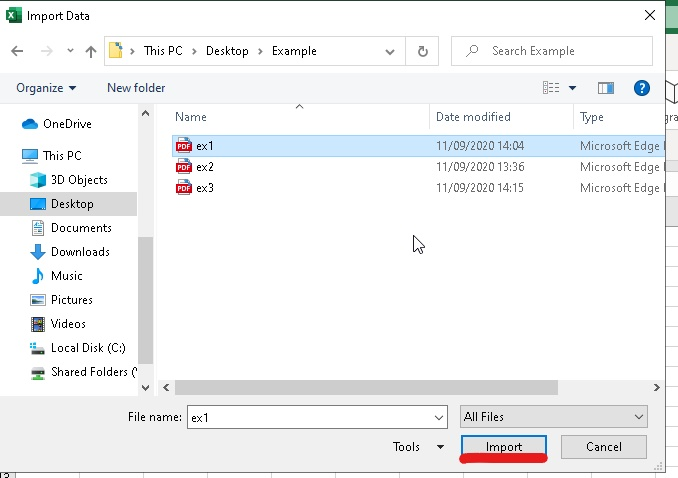
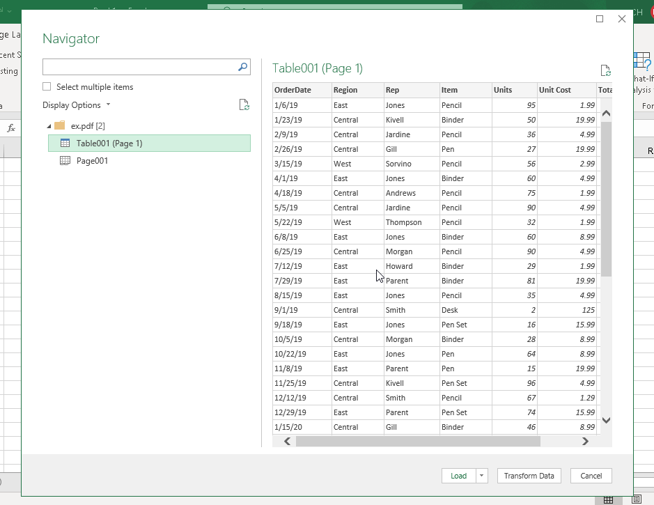
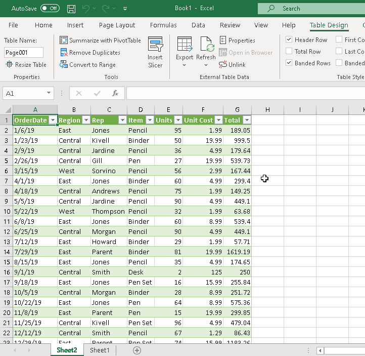
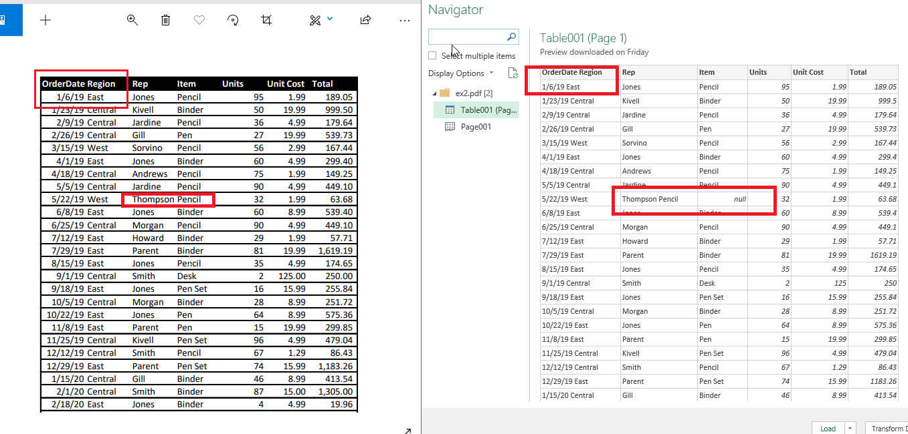
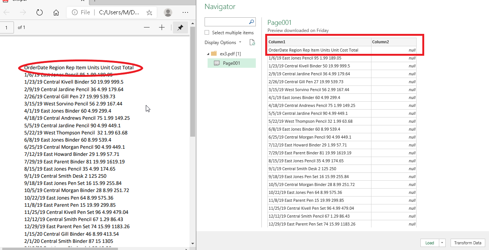

Many times happened to me when I received a PDF file with a table that I had to "type" into the program manually. Fortunately, the data didn't have too many lines 10-20 at most, so it wasn't time-consuming, but it was frustrating and it could cost a mistake. I wish I knew that before.
This option allows you in an easy way to get the data from a PDF file to Excel or Power BI.
EXCEL – PDF FILE – IMPORT

This example I found somewhere on the internet.
It is necessary to have an Excel Power Query add-in.
In Excel spreadsheet choose from ribbon DATA > GET DATA > FROM FILE > FROM PDF

In the next step, we choose PDF file to import > IMPORT

Next step is NAVIGATOR. In NAVIGATOR we have TABLE AND PAGE and choosing one we will see on the right side how our data look like.

If we have nothing to correct, click LOAD. And that is it. Now we have proper data in the Excel spreadsheet.

If we want to change something in the data, e.g. to separate the columns, click TRANSFORM DATA.
The visual form of imported data
If our PDF file is in a "nice" form of a table with columns and headers clearly marked, then most likely there will be no need for the transformation of the data. If our file is without clearly marked / separated columns or in the form of a text where the data between invisible columns are separated only by spaces, the data should be properly prepared while importing through TRANSFORM DATA.
Few examples:


Unfortunately, I have not found a solution to prepare a PDF file made/printed from a photo or a print screen, or a scanned document in this way.
I think it is a very useful tool, It saves me from retyping line of a text to Excel. It is shame I didn't know it before.
Thank you, Magda.